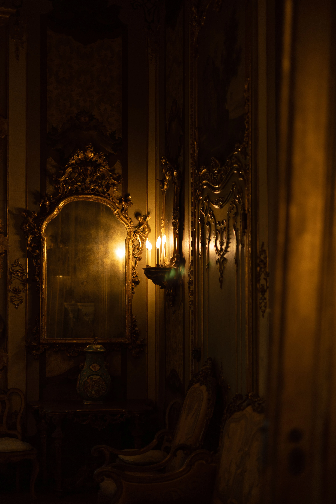

Introduction
Nous avons tous connu cette sensation. Traverser une salle de musée presque vide et sentir qu'un regard nous accompagne. Ce n'est pas celui des visiteurs. Ce n'est même pas vraiment celui du personnage représenté sur la toile. Pourtant, quelque chose demeure. Une présence discrète. Comme si certaines œuvres continuaient à observer le monde longtemps après que leur créateur a posé son dernier coup de pinceau.
Face à certains tableaux anciens, le temps semble ralentir. Les siècles disparaissent derrière une couche de vernis craquelé. Les visages peints retrouvent soudain une étrange proximité. Ils nous regardent avec des yeux qui ont traversé les générations. Et l'espace d'un instant, nous avons l'impression d'être observés autant que nous observons.

Les regards qui traversent les siècles
Un tableau n'est pas seulement une image figée. Il est une rencontre suspendue dans le temps. Derrière chaque portrait se cache un être humain qui a réellement vécu, aimé, espéré ou souffert. Son existence s'est achevée depuis longtemps, mais son regard demeure. Les grands musées du monde sont peuplés de ces présences silencieuses. Des souverains oubliés, des inconnus immortalisés par hasard, des artistes qui ont cherché à capturer quelque chose de plus profond qu'une simple apparence. Lorsque nous nous arrêtons devant eux, nous devenons à notre tour une étape de leur voyage à travers les siècles. Peut-être est-ce pour cela que certains portraits paraissent si troublants. Ils nous rappellent que le temps passe pour les hommes, mais pas toujours pour les images.
Le silence des galeries
Il existe une atmosphère particulière dans les dernières salles des musées. Là où les visiteurs se font plus rares et où les conversations s'éteignent peu à peu. Les œuvres semblent reprendre possession de l'espace. Dans ce silence, les tableaux révèlent autre chose que leur sujet. Ils racontent leur propre histoire. Les restaurations successives. Les incendies auxquels ils ont survécu. Les guerres qui les ont déplacés d'un pays à l'autre. Les milliers de regards qui se sont posés sur eux. Chaque toile devient alors un témoin. Non seulement de l'époque qu'elle représente, mais aussi de toutes celles qu'elle a traversées.
Ce que les tableaux conservent de nous
Nous pensons souvent contempler une œuvre d'art comme un objet extérieur à nous-mêmes. Pourtant, chaque regard laisse une trace invisible. Une émotion. Une interprétation. Un souvenir. Deux visiteurs ne voient jamais exactement le même tableau. Chacun y projette ses propres histoires, ses propres blessures, ses propres espérances. Au fil du temps, une œuvre devient ainsi le point de rencontre de milliers de vies différentes. C'est peut-être là que naît cette étrange impression d'être observé. Non parce que la peinture possède une conscience, mais parce qu'elle porte en elle l'écho silencieux de tous ceux qui l'ont contemplée avant nous. Dans certaines demeures anciennes, les miroirs paraissent partager le même mystère que les portraits. Ils ne reflètent pas seulement ceux qui passent devant eux ; ils semblent conserver quelque chose de leur présence.
Conclusion
Peut-être que les musées ne conservent pas seulement des œuvres d'art. Peut-être conservent-ils aussi les regards qui les ont traversées. Les émotions oubliées. Les questions restées sans réponse. Les fragments de mémoire déposés par des visiteurs anonymes au fil des générations. Et lorsque nous quittons la dernière salle, nous emportons quelque chose du tableau avec nous. Mais il n'est pas impossible qu'une part de nous demeure également derrière le cadre, parmi toutes les autres présences silencieuses qui continuent d'habiter les lieux.
« Les livres oublient rarement ceux qui les ont aimés. »
Gardien des archives du Veilleur